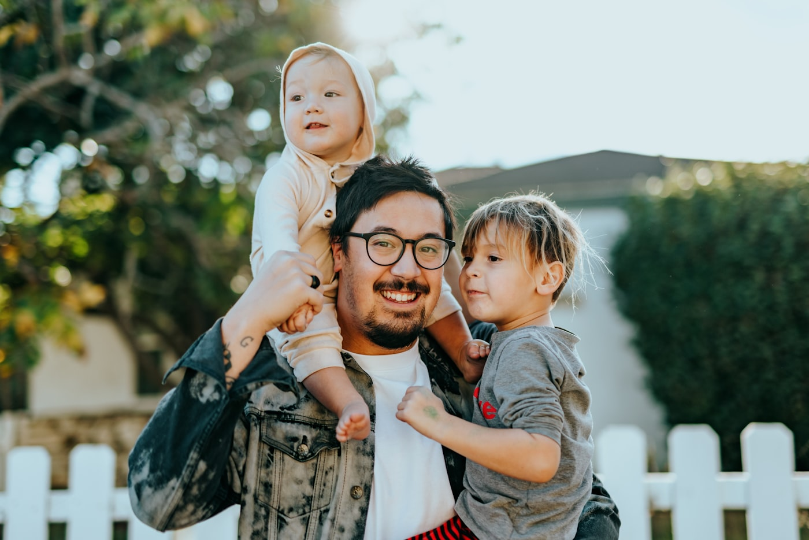

Comunidade
Inclusão na Igreja
Reconhecer o básico no convívio para acolher melhor — sem diagnosticar.
Reconhecer para ajudar
Observar o que aparece no convívio ajuda a acolher melhor. Isso não é diagnóstico: não damos laudo, não classificamos e não perguntamos “o que ela tem?”.
Quando a família já compartilhou, melhor. Quando não, ofereça o apoio que a situação pede — com respeito. São jeitos diferentes de funcionar: não misture os nomes.
Para ajudar, não para rotular
Autismo (TEA) — o que pode aparecer
- Comunicação diferente: demora a responder, fala pouco, ou fala de um jeito próprio.
- Pode evitar olhar nos olhos — não é falta de respeito.
- Sons, luzes ou toques incomodam; cobre os ouvidos ou se afasta.
- Prefere a mesma ordem; mudanças bruscas sobrecarregam.
- Movimentos ou falas repetitivas — muitas vezes para se regular.
- Entende melhor com imagens do que só com fala.
Como acolher no autismo
- Fale claro, dê tempo e não force olhar nos olhos.
- Mantenha a mesma ordem; avise antes de mudar.
- Sons, luzes e toques podem incomodar — ofereça fones ou um lugar mais calmo.
Movimentos repetitivos
Ajudam a se regular — na ansiedade e também na alegria. Se for seguro, não interrompa.
Interesses intensos também conectam: use-os com respeito.
Se houver crise
Sobrecarga — não é “birra de propósito”. Luz, barulho, espera ou mudança de rotina podem precipitar.
- Fale pouco e baixo. Suavize o ambiente.
- Leve a um lugar mais quieto; afaste o que possa machucar.
- Dê tempo. Converse depois. Avise a família com respeito.
Prefira não
- Gritar, cercar ou filmar.
- Exigir “se acalma já” ou olhar nos olhos.
- Impedir movimentos seguros que acalmam.
Para ajudar, não para rotular
Síndrome de Down — o que pode aparecer
- Traços físicos que muitas pessoas já reconhecem — trate com naturalidade, sem apontar nem pena.
- Fala e movimento em ritmo próprio; precisa de mais tempo para responder.
- Compreende melhor com gestos, imagens e repetição.

Como acolher na Síndrome de Down
- Dê tempo para entender e responder — uma ideia por vez.
- Use imagens, gestos e repetição; celebre pequenas vitórias.
- Convide à participação real, sem infantilizar nem tratar com pena.
- Pergunte à família o que ajuda na comunicação e na rotina.

Para ajudar, não para rotular
Transtorno intelectual — o que pode aparecer
- Precisa de mais tempo para entender, lembrar ou responder.
- Instruções longas e metáforas confundem; aprende com exemplo concreto e repetição.
- Pode precisar de apoio na rotina — isso não significa que “não consegue”.
Como acolher no transtorno intelectual
- Divida tarefas em etapas menores.
- Repita a ideia central; mostre o exemplo.
- Aceite resposta com gesto, desenho ou poucas palavras.
Importante: não avalie “capacidade” na igreja. Ofereça apoio e pergunte à família o que funciona.
O que ajuda a todos
Espaço e kit
Um lugar mais calmo e itens simples: fones, fidgets, cartão de pausa.
Pictogramas (quadro de rotina)
Momento de hinos → Oração → Palavra → Encerramento. Avise mudanças.
Voluntário perto
Alguém fixo ao lado, se precisar — sem substituir a família.
Flexibilidade
Às vezes o encontro todo; às vezes sair antes ou ficar no espaço calmo.
Cada pessoa é única
O laudo, se houver, é da família e da saúde. Reconhecer o que aparece no convívio é para ajudar — não para rotular.
← → · F tela cheia